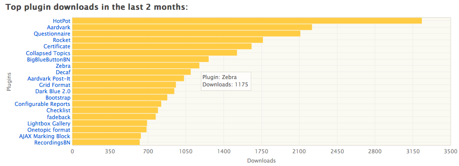
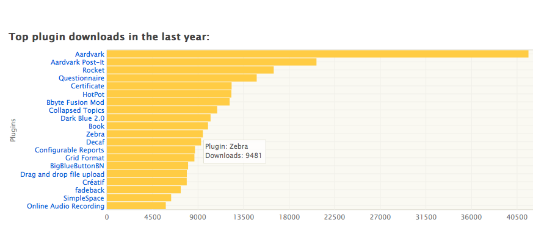

Moodle Plugins Directory Statistics
 Danny Wahl
•
•
Danny Wahl
•
•
I recently noticed that moodle.org added some statistics to plugin pages, which had been a requested feature for a while. Maybe I’m just prideful but I like seeing how many people are using my contributions. Of course, just having a number doesn’t really mean that much unless you can compare it to something. Which is what the stats page is for.
So let’s take a look at my favorite plugin in the Directory, Zebra (Ok, maybe I’m biased). Actually, I only thought about it because I saw it was on the lists!


Let’s take a look at the 2012 graph:
- Over 9,000 downloads and counting
- 11th most downloaded plugin (all categories)
- 6th most downloaded theme
Now for the last 2 months:
- 8th most downloaded plugin (all categories)
- 3rd most downloaded theme
Of course you can’t take this too seriously because this has no way of knowing the number of downloads coming from other places (like github). Also, at face value it looks like Zebra is gaining popularity (up in 2 months compared to 12) but it’s actually down as a percentage – meaning that likely other plugins are just down more. So, uh, there you go!